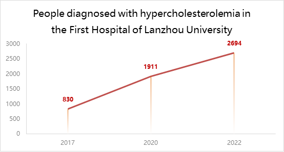

Background
What is hypercholesterolemia?
Hyperlipidemia involves an imbalance of cholesterol levels,
including low-density lipoprotein cholesterol (LDL-C) and
high-density lipoprotein cholesterol (HDL-C) in the blood.
LDL-C and HDL-C regulate the amount of cholesterol in the
body and an imbalance can increase the risk of cardiovascular
events, including myocardial infarction and stroke. Other
forms of hyperlipidemia include hypertriglyceridemia as
well as mixed hyperlipidemia, in which both cholesterol
and triglyceride levels are elevated. Elevated LDL-C can
lead to a buildup of plaques within the arteries and is
associated with an increased risk of atherosclerotic
cardiovascular disease (ASCVD), including coronary
artery disease or stroke. As HDL-C functions to remove
cholesterol from the body, increased levels of
HDL-C (≥60 mg/dL) can help decrease the risk of
ASCVD[1].

Increased incidence and the magnitude of the hazard
We personally conducted an investigation
at the First Hospital of
Lanzhou University and interviewed
experts from the Gansu Provincial Center for Disease
Control and Prevention to clarify the trend of
increasing incidence of hypercholesterolemia in Gansu
province. In the United States, more than 100
million, or roughly 53% of adults, have elevated
LDL-C levels[2]. Yet, fewer than 50% of patients
with high LDL-C receive treatment to reduce their
levels, and among those receiving treatment, fewer
than 35% achieve adequate control[2,3]. Further,
approximately 31 million American adults have
total cholesterol levels that exceed 240 mg/dL,
placing them at about twice the risk of ASCVD
compared to those with total cholesterol
levels that are at goal[4].
Gut microbiota plays an important role in lipid metabolism and thus affects the cardiovascular system
The association between obesity
and the gut microbiome suggests that bacteria in
particular influence host lipid metabolism and hence
atherosclerosis. In a study of over 800 subjects, it
was shown that the gut flora played a significant role
in the variation of blood lipids. Increased lipids in the
blood were associated with the loss of commensal bacteria
such as Bacteroidetes and Clostridia[5]. Functional
analyses of the microbiome in patients with
atherosclerosis further suggest an increased
capacity to metabolize certain lipids[6]. Utilizing
the gut microbiota to control cholesterol levels in
the human body would be a novel strategy for the
prevention and treatment of hypercholesterolemia
and even atherosclerosis.
Reference
[1] Cooney MT, Dudina A, De Bacquer D, et al. HDL cholesterol protects against cardiovascular disease in both genders, at all ages and at all levels of risk. Atherosclerosis. 2009;206(2):611-616. doi: 10.1016/j.atherosclerosis.2009.02.041.
[2] Mozaffarian D, Benjamin EJ, Go AS, et al. Heart disease and stroke statistics—2016 update: a report from the American Heart Association. Circulation. 2016;133(4):e38-e360. doi: 10.1161/CIR.0000000000000350.
[3] Centers for Disease Control and Prevention (CDC). Vital signs: prevalence, treatment, and control of high levels of low-density lipoprotein cholesterol—United States, 1999-2002 and 2005-2008. MMWR Morb Mortal Wkly Rep. 2011;60(4):109-114.
[4] Nussbaumerová B, Rosolová H. Epidemiologie hypercholesterolemie [Epidemiology of hypercholesterolemia]. Vnitr Lek. 2018 Winter;64(1):30-37. Czech. PMID: 29498873.
[5] Fu J, Bonder MJ, Cenit MC, Tigchelaar EF, Maatman A, Dekens JA, Brandsma E, Marczynska J, Imhann F, Weersma RK, Franke L, Poon TW, Xavier RJ, Gevers D, Hofker MH, Wijmenga C, Zhernakova A. The Gut Microbiome Contributes to a Substantial Proportion of the Variation in Blood Lipids. Circ Res. 2015 Oct 9;117(9):817-24. doi: 10.1161/CIRCRESAHA.115.306807. Epub 2015 Sep 10. PMID: 26358192; PMCID: PMC4596485.
[6] Jie Z, Xia H, Zhong SL, Feng Q, Li S, Liang S, Zhong H, Liu Z, Gao Y, Zhao H, Zhang D, Su Z, Fang Z, Lan Z, Li J, Xiao L, Li J, Li R, Li X, Li F, Ren H, Huang Y, Peng Y, Li G, Wen B, Dong B, Chen JY, Geng QS, Zhang ZW, Yang H, Wang J, Wang J, Zhang X, Madsen L, Brix S, Ning G, Xu X, Liu X, Hou Y, Jia H, He K, Kristiansen K. The gut microbiome in atherosclerotic cardiovascular disease. Nat Commun. 2017 Oct 10;8(1):845. doi: 10.1038/s41467-017-00900-1. PMID: 29018189; PMCID: PMC5635030.